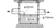
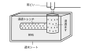

2025年
問題129 雨水排水設備に関する次の記述のうち，最も不適当なものはどれか．
（1）雨水ますの底部には，150mm以上の泥だめを設ける．
（2）雨水ますの流出管は，流入管よりも管底を20mm以上下げて設ける．
（3）雨水排水管と合流式の敷地排水管を接続する場合は，トラップますを設け，ルーフドレンからの悪臭を防止する．
（4）ルーフドレンのストレーナの開口面積は，それに接続する雨水排水管と同じ開口面積とする．
（5）雨水浸透施設は，透水性舗装，浸透ます，浸透トレンチ等より構成される．
2025年
問題129 正解（4） 頻出度AAA
ルーフドレンのストレーナの開口面積は，それに接続する雨水排水管の2倍程度とする．ルーフドレンは屋外にあるため木の葉や土砂で詰まりやすいのでできるだけ屋根面から突き出たドーム型が好ましい（2025-129-1図参照）．

出典 株式会社中部コーポレーション
https://www.chubu-net.co.jp/kenzai/Product/category/1/
-(1)，-(2)雨水の敷地排水管に設けるますには「雨水ます」，「トラップます」がある．
雨水ますは底部に150mm程度の泥だまりを有し，土砂を堆積させ，下水道へそれが流出するのを防ぐ（2025-129-2図参照）．

出典 公益財団法人日本建築衛生管理教育センター
「新建築物の環境衛生管理第2版第1刷」中巻503頁 図6-7-5(2)を基に作成
スムースに流すために，雨水ますの流出管は，流入管よりも管底を20mm以上下げて設ける．
-(3)雨水排水管を合流式排水横主管に接続する場合は，どの排水立て管の接続点からも3m以上下流で接続する（2025-129-3図参照）．接続箇所にはトラップます（2025-129-4図参照）を設け，悪臭がルーフドレンに上がるのを防止する．


出典 公益財団法人日本建築衛生管理教育センター
「新建築物の環境衛生管理第2版第1刷」中巻503頁 図6-7-5(3)を基に作成
-(5) 雨水浸透施設2025-129-5図．

出典 株式会社 駿河設備
http://www.suruga-setsubi.co.jp/gesui1.html を基に作成